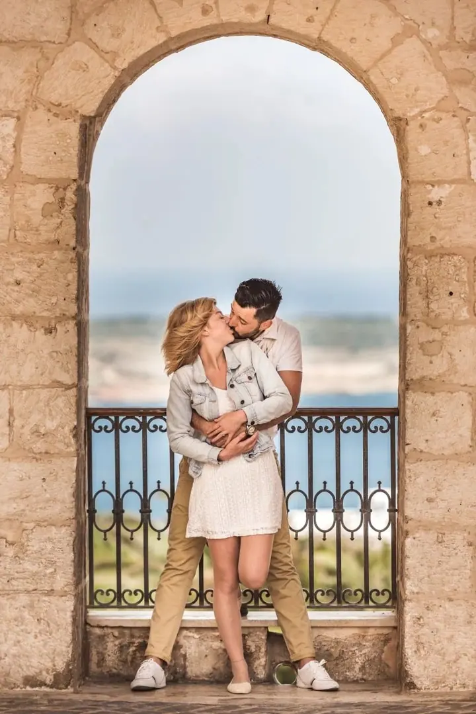
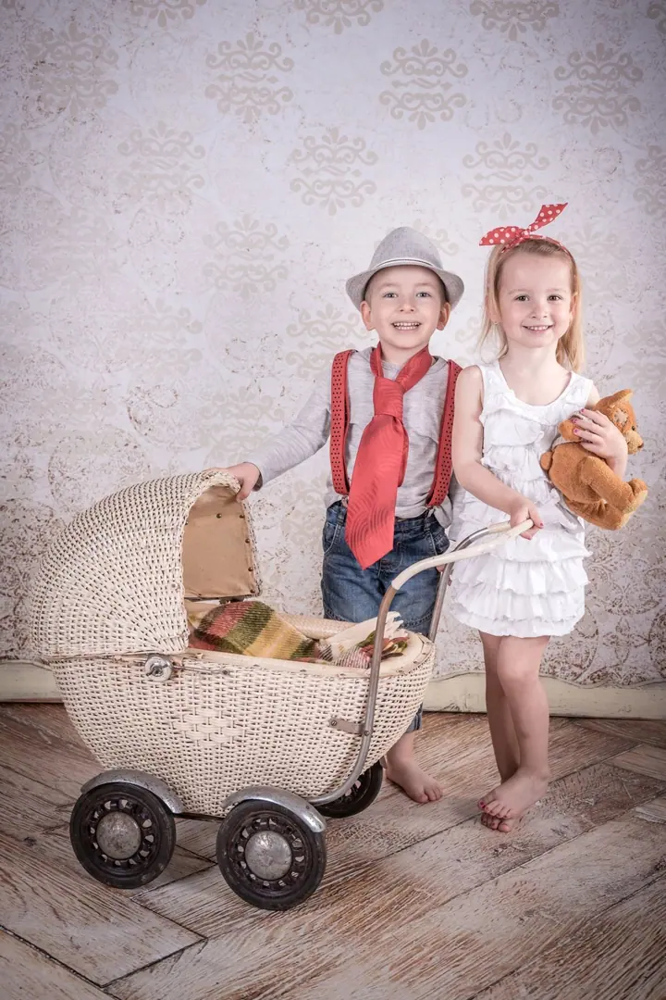
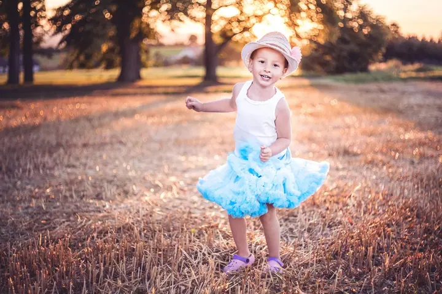

jedna
Svatební fotografie
Svatby jsou moje hlavní zaměření. Fotím po celé republice na zámcích, mlýnech, statcích i farmách. Za novomanželi jezdím i do zahraničí, svatby jsem fotil třeba na Mauriciu, v Las Vegas nebo v Benátkách.

Svatební fotograf · Chrudimsko, celá Česká republika, zahraničí

Jmenuji se Michal Malinský a jsem zaměřením svatební fotograf s celorepublikovou i mezinárodní působností. Svatby jsem fotil na zámcích, ve mlýnech a na statcích, ale i na pláži u moře. Rád fotím taky rodiny a děti, se kterými je vždycky legrace.
Více o mně
Co fotím
jedna
Svatby jsou moje hlavní zaměření. Fotím po celé republice na zámcích, mlýnech, statcích i farmách. Za novomanželi jezdím i do zahraničí, svatby jsem fotil třeba na Mauriciu, v Las Vegas nebo v Benátkách.
dvě
Společné focení před svatbou, při kterém se poznáme a vy si zvyknete na foťák. Fotil jsem ho třeba na Maltě nebo v Benátkách.
tři
Děti fotím venku v parku i v interiéru mezi kulisami. Hlavně ať si to užijí a fotky jsou plné smíchu.
Od obřadu až po prskavky pozdě večer

Za objektivem
Fotím pod značkou MMphotography a svatby jsou to, čemu se věnuji nejvíc. Doma jsem na Chrudimsku a v okolí, fotil jsem třeba ve Slatiňanech, na hradě Košumberk nebo v Pardubicích. Za svatbou ale klidně vyrazím kamkoli po republice, od Prahy po Brno.
Několikrát jsem fotil i svatby v zahraničí. Byl jsem s novomanželi na Mauriciu, v Las Vegas a v Benátkách, předsvatební focení jsem dělal třeba na Maltě. Ať je to statek za vesnicí nebo pláž u oceánu, zajímají mě hlavně lidé a to, jak spolu prožívají svůj den.
Kromě svateb fotím rodiny a děti, ale i krajinu, architekturu, auta nebo koncerty. Rád si hraju se starými objektivy, takže některé snímky mají zvláštní, trochu nostalgickou atmosféru.
Michal
Napište mi nebo zavolejte termín a místo svatby. Hned vám řeknu, jestli mám volno.
Probereme, jak si svatební den představujete, kde se bude co dít a na čem vám záleží. Pokud chcete, domluvíme i předsvatební focení.
Jsem s vámi od příprav nebo obřadu až do večera. Fotím nenápadně a když je čas na společné portréty, najdeme hezké místo a světlo.
Fotky pečlivě vyberu a upravím, aby měly jednotný styl, a pošlu vám je v plném rozlišení.
Portfolio
Otázky
Ano, fotím po celé republice i v zahraničí. Svatby jsem fotil třeba na Mauriciu, v Las Vegas nebo v Benátkách.
Ano. Je to dobrý způsob, jak se před svatbou poznat a zvyknout si na foťák. Fotil jsem ho třeba na Maltě nebo v Benátkách.
Cena záleží hlavně na tom, kolik hodin u vás budu a kde se svatba koná. Napište mi termín a místo a pošlu vám nabídku.
Ano, rodinné a dětské focení dělám venku v přírodě i v interiéru s kulisami. Děti fotím hlavně tak, aby si to užily.